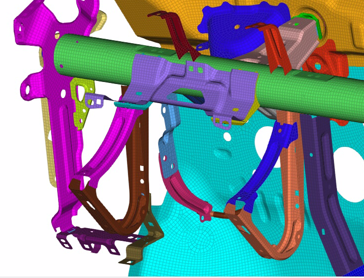
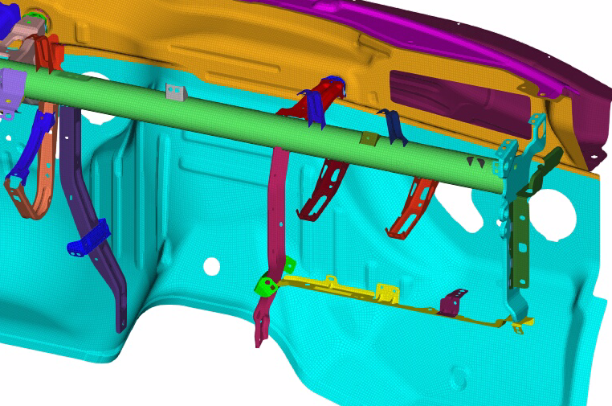

Overview
How a steering wheel and column vibrate depends on the instrument panel structure behind them. With two colleagues I built an AI/ML tool in PhysicsAI that predicts steering wheel and column modal performance for trucks and cars, so risks show up before full-vehicle performance runs.

Parametric model
We built a parametric instrument panel model with lumped masses standing in for the ducts, trim, airbag, infotainment, cluster and screens. The design levers were the beam architecture (magnesium, hybrid, single or split beam), the steering column type (power or manual) and the gauges of 42 structural brackets.


Approach
We trained the models on instrument panel modal analysis results, then used sensitivity analysis to rank how strongly each design lever moves the steering wheel and column modes and to explore the best design combinations early in the cycle.
Result
The tool cut HPC demand and manual effort by 25%, which allowed faster design iterations and earlier detection of risks in the development cycle.